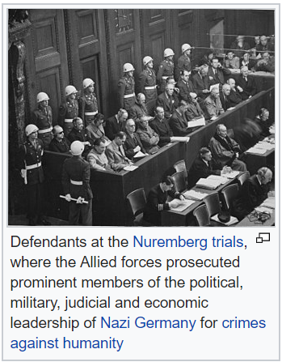
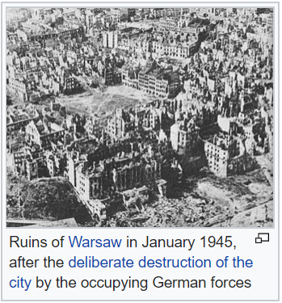
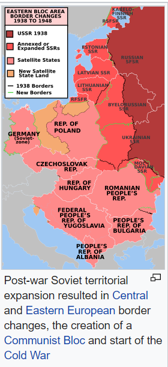

×

The Allies established occupation administrations in Austria and Germany. The former became a neutral
state, non-aligned with any political bloc.The latter was divided into western and eastern occupation zones controlled by the Western Allies and the USSR, accordingly.
A denazification programme in Germany led to the prosecution of Nazi war criminals and the removal of ex- Nazis from power,
although this policy moved towards amnesty and re-integration of ex-Nazis into West German society.

×

Germany lost a quarter of its pre-war (1937) territory. Among the eastern territories, Silesia, Neumark and
most of Pomerania were taken over by Poland, East Prussia was divided between Poland and the USSR,
followed by the expulsion of the 9 million Germans from these provinces, as well as the expulsion of 3 million
Germans from the Sudetenland in Czechoslovakia to Germany. By the 1950s, every fifth West German was a
refugee from the east.
The Soviet Union also took over the Polish provinces east of the Curzon line, from which 2 million Poles were
expelled north-east Romania, parts of eastern Finland, and the three Baltic states were also incorporated into the USSR.
In an effort to maintain world peace, the Allies formed the United Nations, which officially came into existence
on 24 October 1945,and adopted the Universal Declaration of Human Rights in 1948, as a common standard for
all member nations. The great powers that were the victors of the war—France, China, Britain, the Soviet Union
and the United States—became the permanent members of the UN's Security Council. The five permanent
members remain so to the present, although there have been two seat changes, between the Republic of China and the People's Republic of China in
1971, and between the Soviet Union and its successor state, the Russian Federation, following the dissolution of the Soviet Union in 1991.
The alliance between the Western Allies and the Soviet Union had begun to deteriorate even before the war was over.
In an effort to maintain world peace, the Allies formed the United Nations, which officially came into existence on 24 October 1945, and adopted the Universal Declaration of
Human Rights in 1948, as a common standard for all member nations.
The great powers that were the victors of the war—France, China, Britain, the Soviet Union and the United States—became the permanent members of the UN's Security Council.
The five permanent members remain so to the present, although there have been two seat changes, between the Republic of China and the People's Republic of China in 1971,
and between the Soviet Union and its successor state, the Russian Federation, following the dissolution of the Soviet Union in 1991.
The alliance between the Western Allies and the Soviet Union had begun to deteriorate even before the war was over.

×

Germany had been de facto divided, and two independent states, the Federal Republic of Germany and the German Democratic
Republic were created within the borders of Allied and Soviet occupation zones, accordingly. The rest of Europe was also
divided into Western and Soviet spheres of influence. Most eastern and central European countries fell into the Soviet
sphere, which led to establishment of Communist-led regimes, with full or partial support of the Soviet occupation
authorities. As a result, East Germany, Poland, Hungary, Romania, Czechoslovakia, and Albania became Soviet
satellite states. Communist Yugoslavia conducted a fully independent policy, causing tension with the USSR.
Post-war division of the world was formalised by two international military alliances, the United States-led NATO and the
Soviet-led Warsaw Pact the long period of political tensions and military competition between them, the Cold War, would
be accompanied by an unprecedented arms race and proxy wars.
In Asia, the United States led the occupation of Japan and administrated Japan's former islands in the Western Pacific, while
the Soviets annexed Sakhalin and the Kuril Islands. Korea, formerly under Japanese rule, was divided and occupied by the
Soviet Union in the North and the US in the South between 1945 and 1948. Separate republics emerged on both sides of the 38th
parallel in 1948, each claiming to be the legitimate government for all of Korea, which led ultimately to the Korean War.